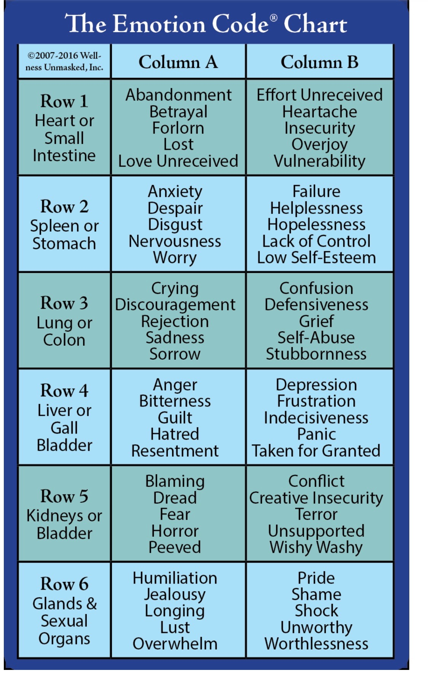

The Basics
This workbook is yours to keep. Write in it, return to it, and let it be a record of your healing.
Certified Emotion Code Practitioner
milashealingtouch.com | @milashealingtouch
A live workshop with Mila Velazquez, MSPT, CECP
The Emotion Code is a mind and body technique created by Dr. Bradley Nelson to find where emotional energies are - the emotional energies that are making us not well. Mila is a certified Emotion Code practitioner who also trained in the Neuro-Emotional Technique, the Omnium Method, and consciousness studies. She blended them all together to create her own approach.
As Mila says: every energy healer makes it their own. The Emotion Code is just another tool in your toolbox of the tools that you already have.
"I took the Emotion Code, I took the Neuro-Emotional Technique, the Omnium Method, and a few other studies in consciousness, and I kind of blended it all together to make it my own."
- Mila VelazquezDr. Nelson teaches that the body "makes" a trapped emotion when a painful experience is not filtered. Mila disagrees. She believes the energy comes in from outside - and when it does not filter through, it becomes lodged in the body. It gets lodged in your organs, your glands, your bioenergetic field, your fascia. The body does not create the emotion - the energy enters and gets stuck.
What makes us well and what makes us sick
Mila teaches that there are four main things in life that can make us well or make us sick. These are the four areas we look at when dealing with the mind, the body, the spirit, and the soul.
There are other energies beyond the emotions that can hold an issue: offensive energies, post-traumatic energies, pathogens, toxicity, misalignments, and color imbalances. Today we focus only on the emotional energies.
Understanding who holds the information
Holds all of your programming. All of the experiences you have ever had in this life. Your programs, your patterns. Dr. Bradley says it holds everything, including past lives.
Your own librarian. It is inside of you and outside of you. It is where the Akashic Records are. It holds all the information - including past lives. It is all-knowing, it is in the quantum field, and it knows your charts, what you are thinking, and where you are looking.
Mila teaches that when you bring the subconscious mind and the higher self together, you can find the information you need to help someone heal.
You must ask before entering anyone's energy field
Before you can enter anybody's energy field, you have to ask for their permission. Without their permission, your answers will be wrong. You will ask "Is it in column A?" and get yes. "Is it in column B?" and also get yes. That means you are not in - because you never asked for permission.
"It's by all the laws of the universe. You can't break the laws of the universe."
- Mila VelazquezWhat Mila asks before every single session
Before starting any session, Mila asks a series of safety questions. Dr. Brad does not teach about safety - Mila added this herself.
You can clear everything - but if the person is not ready, they will not heal
Before starting any session, Mila checks four things. If a person does not meet all four, you can clear everything and nothing will stick.
Some people have a resistance to healing. Some people have self-sabotage. They may be playing the victim and liking where they are. If someone is not willing, they will come back session after session and get nothing. Some parents run from healer to healer and spend a fortune.
"I don't feel sorry for anybody. Sorry is a very low vibration. I don't worry about them. I don't feel bad for them. I don't feel sorry for them. To each their own. Everyone has something in their life."
Mila shared a story of a 29-year-old woman who came on as a breath of fresh air and then told her she had breast cancer in her bone, her liver, travelling through her body. Mila's internal response: "This does not belong to you. This is her life. This is her journey. This is her path. This is her karma. It's not mine. And I don't accept it in."
Every person has their own life path. Healers are assisters - we do not do the healing. We help people heal.
How we communicate with the subconscious mind
We speak to the subconscious mind by using the nervous system and manually muscle testing. You can also use a pendulum or the sway test to test yourself.
Three testing methodsStand relaxed. Make a true statement - your body sways forward. Make a false statement - it sways back. This is your baseline yes/no.
When they hold strong, it is a yes. When they go weak, it is a no. Strong means congruent. Weak means non-congruent.
Form a ring with your thumb and finger. Try to pull it apart while making a statement. Ring holds = yes. Ring breaks = no.
If you want to work on someone else - an animal, a child, another person - Dr. Bradley says you take proxy. It is like one person is on AM and the other is on FM. You both have to come together into one frequency, one channel, so one person can test for the other.
Dr. Brad does this with intention: "My intention is I'm going to test on behalf of Chris." When he muscle tests, he says "My name is Mila" - he goes weak. "My name is Chris" - he goes strong. That is proxy.
Mila does not take on the other person's energy. When you take on someone's energy and you see many people in a day, you are exhausted by the end. In her Advanced Healers course, she teaches how to connect to someone's higher self in the quantum field to get the same information without absorbing their energy.
You can also test through a surrogate - hooking two people up together so one person can be tested on behalf of the other.
Two columns, six rows, 60 emotions - your primary reference tool
The chart has Column A and Column B, with 6 rows. You start by asking which column, then even or odd rows, then the specific row, then test each emotion in that group until you hold strong.
Official Emotion Code Chart - keep this page handy for reference

The Emotion Code Chart © Dr. Bradley Nelson
| Row & Organ System | Column A | Column B |
|---|---|---|
|
Row 1
Heart & Small Intestine
|
Abandonment Betrayal Forlorn Lost Love Unreceived | Effort Unreceived Heartache Insecurity Overjoy Vulnerability |
|
Row 2
Spleen & Stomach
|
Anxiety Despair Disgust Nervousness Worry | Failure Helplessness Hopelessness Lack of Control Low Self-Esteem |
|
Row 3
Lung & Large Intestine
|
Crying Discouragement Rejection Sadness Sorrow | Confusion Defensiveness Grief Self-Abuse Stubbornness |
|
Row 4
Liver & Gallbladder
|
Anger Bitterness Guilt Hatred Resentment | Depression Frustration Indecisiveness Panic Taken for Granted |
|
Row 5
Kidneys & Bladder
|
Blaming Dread Fear Horror Peeved | Conflict Terror Unsupported Wishy-Washy |
|
Row 6
Glands & Sexual Organs
|
Conflict Creative Insecurity Humiliation Overwhelm Pride Shame Shock Unworthy Worthless | Longing Lust Overwhelm Sexual Abuse |
The step-by-step process Mila teaches
You do not have to remember the event in order to clear the energy. With the Neuro-Emotional Technique, you have to remember the event cognitively. Why put someone through the same trauma again if they have already repressed it?
Personal, absorbed, and inherited - three distinct categories
Your own emotion from your own experience. "Is it yours? Yes." This is the most straightforward - it happened to you and got stuck.
Someone else's emotion that you took on. "Was it absorbed? Yes. From whom?" You can trace it - was it from mom, dad, your husband, a sibling? That person was in that emotional state and you absorbed it.
Passed down through generations. If you go through the emotions and go weak on all of them, ask: "Is it inherited?" Then find the emotion again - "Oh, you inherited peeved." How many generations? Trace the lineage through mother's and father's sides.
"People like it. They want to know where they received their shit from. It's important for them. And then they cry because they remember great-grandmother, grandmother."
- Mila VelazquezMila gives a story of the cognitive experience: you find the emotion was fear, absorbed from an ex-husband, around age 18. You give the person a story so they understand where they were in life at that point. When the light bulb goes off, you can tell right away that they remember. But they do not have to remember - the energy can still be cleared.
Know your limits and protect yourself
Mila is direct about this topic. When someone comes on, she looks at the person and can tell intuitively if there is an entity. Then she decides whether she is going to release it or not.
If it is safe and the entity can be released, she does it. If it is a demonic energy or something too strong, she will not go there. If she gets a "no" on safety, she tells the person it is not safe, gives them their money back, and calls it a day. She does not scare anyone, but she is honest.
"I ask and intend that any negativity goes up and out into the light. I ask that any energies that are not for our highest and greatest good do not enter our energy field, that we have no interference - and so be it."
- Mila Velazquez (opening prayer)What happens when the energy leaves - from Mila's experience
Mila tests at the end of each session how many days the person needs to process. Processing means the energy is integrating - it is gone, it is out of the system, out of the energy field. People feel it emotionally, mentally, physically, or spiritually.
Dr. Bradley Nelson says that 60% of people process and feel it. 40% do not feel a single thing. Everybody processes differently, and everybody has a different time frame.
People physically feel lighter. They feel relieved. We are releasing negative energies that no longer serve and elevating the vibration of a person. It is all about frequency and vibration.
Practice using the chart and muscle testing
Work through the process step by step. Use the chart on the previous page as your reference. Record what you find in the table below. Trust your body.
Questions to ask: Column A or B? Even or odd row? Which specific row? Which emotion? Do I need to know more? How old? Absorbed? Inherited? Personal? From whom? Is it safe to clear?
| # | Column | Row | Emotion | Type | Age | From Whom? | Safe? | Cleared? |
|---|---|---|---|---|---|---|---|---|
| 1 | ||||||||
| 2 | ||||||||
| 3 | ||||||||
| 4 | ||||||||
| 5 | ||||||||
| 6 |
Resources Mila mentioned during the workshop
It has to make sense not only from the metaphysical but from the sciences. She needs a scientific reason for why something happens. She brought the sciences together with the metaphysics, plus energy, plus intuition.
Mila teaches this workshop for people who want to self-heal - to give you a taste of what the Emotion Code is. If something really resonates and you want to use it on other people, she recommends getting the full certification. There are tons of other modalities out there too - it does not mean you will be certified in each one, but if something truly calls to you, pursue it.
For ongoing self-practice at home
Mila says: practice makes perfect. Start on yourself before touching somebody else. Practice with the sway test, the pendulum, and start with questions you already know the answer to. Make sure your crown chakra is open and connected to the divine - otherwise you cannot get to your higher self or the quantum field.
| Date | Emotion Found | Col / Row | Type | Age | Details | Safe? | Released? |
|---|---|---|---|---|---|---|---|
Use this space however your body is asking you to use it
The work you did today is just the beginning
Mila Velazquez is a retired Physical Therapist (still licensed in the state of New Jersey) who spent 30 years evaluating and treating neurological and orthopedic conditions. She is a Certified Emotion Code Practitioner who also trained in the Neuro-Emotional Technique and the Omnium Method. She brought the sciences together with the metaphysics, plus energy, plus intuition - and made it her own.
Connect with Mila
milashealingtouch.com
Book a session
milashealingtouch.as.me
Social
@milashealingtouch
Learn the Emotion Code: The Basics | Mila's Healing Touch | All rights reserved
This workbook is for educational purposes. It is not medical advice. Consult a healthcare provider for medical concerns.